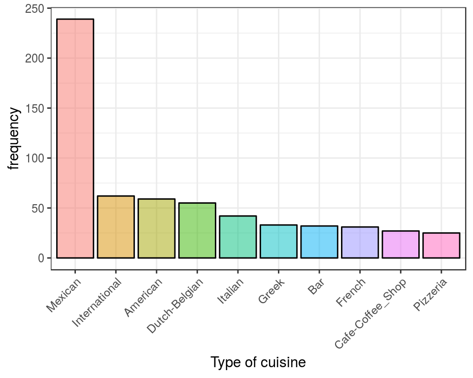
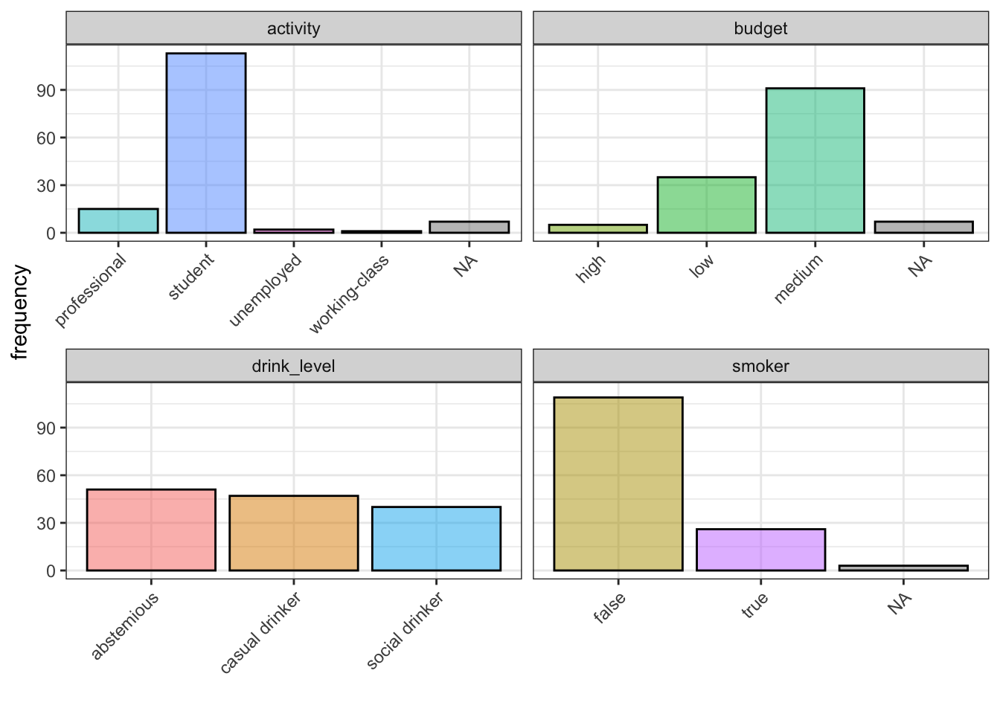

In this post I play around with R to investigate the users’ preferences on restaurants. Somewhere on the net, I found a set of 3 datasets containing information on restaurants, users’ ratings and users who rated them. This is an interesting example because the information is spread on three different tables/datasets and in order to answer questions on users’ preferences, we need to join such tables similarly to what you do with SQL.
Most of the data manipulation and visualisation will be done with the tidyverse package, more specifically we will use mainly dplyr and ggplot2. So first, let us load the whole tidyverse:
require(tidyverse)Now, using the tidyverse functions for data import, let us import the three tables:
chefmozcuisine <- read_delim("data/chefmozcuisine.csv", delim = ",", col_names = T)
userprofile <- read_delim("data/userprofile.csv", delim = ",", col_names = T)
rating_final <- read_delim("data/rating_final.csv", delim = ",", col_names = T)The three tables are organised as follows:
chefmozcuisine contains 2 variables which refer to the characteristics of 916 restaurants in the US. More specifically the variables are:
userprofile contains 19 variables which refer to the characteristics of 138 users. In addition to users’ id, there are variables describing different habits including smoking and drinking habits
rating_final contains 1161 different ratings on the restaurants contained in chefmozcuisine. More specifically we have:
userprofile tablechefmozcuisine tableBefore we start with the analysis, we need to manipulate the data a bit. I am particularly interested into two things. As we will be joiing tables through the restaurants id and the For example we want to make sure that IDs are character instead of numeric so that we do not accidentally calculate anything on them:
rating_final <- rating_final %>% mutate(placeID = as.character(placeID))
chefmozcuisine <- chefmozcuisine %>% mutate(placeID = as.character(placeID))Another frequent issue is missing data. In these tabes missingness is coded as “?” which is not the missingness symbol in R. Hence with a small additional manipulation:
userprofile <- userprofile %>% na_if("?")In order to be able to better understand and interpret the answers to our questions, in this section we may start understanding what kind of data we are working with is available: what kind of users are we looking at? and what kind of restaurants do we have in the datasets?
Let us first focus on restaurants. The dataset contains the restaurants’ id and the type of cuisine. It contains info on 916 different restaurants and there are 59 different types of cuisine.
Let us focus only on the 10 most frequent types of cusine:
top10_cuisine <- chefmozcuisine %>%
group_by(Rcuisine) %>%
summarise(freq = n()) %>%
arrange(desc(freq)) %>%
slice(1:10)
top10_cuisine$Rcuisine <- reorder(top10_cuisine$Rcuisine, -top10_cuisine$freq)
ggplot(data = top10_cuisine) +
geom_bar(aes(x=Rcuisine, y = freq, fill = Rcuisine), col = "black", alpha = 0.5, stat = "identity") +
labs(x = "Type of cuisine", y = "frequency") +
theme_bw() +
theme(legend.position="", axis.text.x=element_text(angle=45, hjust=1))
Mexican seems much more popular than any other type of cusine as there are nearly 250 different restaurants that do Mexican food.
The users’ dataset contains info on 138 users. Most of the users are students, either low or medium budget, does not smoke and like drinking when they go out. Let us visualise this information:
ggplot(data = userprofile %>%
select(userID, activity, smoker, budget, drink_level) %>%
gather(key, value, -userID)) +
facet_wrap(~key, scales = "free_x") +
geom_bar(aes(x = value, fill = value), col = "black", alpha = 0.5)+
labs(y = "frequency", x = "")+
theme_bw() +
theme(legend.position="", axis.text.x=element_text(angle=45, hjust=1)) 
Now we are ready to combine all the tables and use them to answer questions.
The type of cuisine is contained in the table called chefmozcuisine while the restaurant rated the best is contained in the table called rating_final.
First we need to aggregate the rating_final dataset by restaurant id. Then we calculate the average rating received by each restaurant and we sort by decreasing order. Notice that as there are some restaurants that have few reviews, we focus only on restaurants that received at least 20 reviews:
tab1 <- rating_final %>%
group_by(placeID) %>%
summarise_at(vars(rating, food_rating, service_rating),
funs(mean, n())) %>%
filter(rating_n >= 20) %>%
arrange(desc(rating_mean), desc(food_rating_mean), desc(service_rating_mean)) Last, using the restaurant id that univocally identifies restaurants, we add the food type:
tab1_best <- tab1 %>%
left_join(chefmozcuisine) And three best rated restaurants are the following:
| placeID | rating_mean | food_rating_mean | service_rating_mean | rating_n | food_rating_n | service_rating_n | Rcuisine |
|---|---|---|---|---|---|---|---|
| 135085 | 1.333333 | 1.472222 | 1.166667 | 36 | 36 | 36 | Fast_Food |
| 132825 | 1.281250 | 1.343750 | 0.937500 | 32 | 32 | 32 | Mexican |
| 135052 | 1.280000 | 1.160000 | 1.160000 | 25 | 25 | 25 | Bar |
The answer to this question is similar to that above, but we need to filter by smoking habits. So we start by userprofile dataset and focus only on those users who smoke. Then we add all the reviews of those users by joining by userID which is present in both datasets. Then, we proceed as above: we group by restaurant id, we calculate the average rating, we sort by descending order and add information on the cuisine type by joining by restaurant id. This time we focus only on those restaurants that received at least 5 reviews:
tab2 <- userprofile%>%
filter(smoker == "true") %>%
left_join(rating_final) %>%
group_by(placeID) %>%
summarise_at(vars(rating_mean = rating, food_rating_mean = food_rating,
service_rating_mean = service_rating),
funs(mean, n())) %>%
filter(rating_n >= 5) %>%
arrange(desc(rating_mean), desc(food_rating_mean), desc(service_rating_mean)) %>%
left_join(chefmozcuisine) The best three places to eat for smokers seems to be more casual places, like pubs, fast food and places with international food:
| placeID | rating_mean | food_rating_mean | service_rating_mean | rating_n | food_rating_n | service_rating_n | Rcuisine |
|---|---|---|---|---|---|---|---|
| 135026 | 1.6 | 1.600000 | 1.600000 | 5 | 5 | 5 | Bar |
| 135026 | 1.6 | 1.600000 | 1.600000 | 5 | 5 | 5 | Bar_Pub_Brewery |
| 132862 | 1.5 | 1.333333 | 1.333333 | 6 | 6 | 6 | International |
| 135085 | 1.4 | 1.400000 | 1.200000 | 5 | 5 | 5 | Fast_Food |
Here the routine to get the answer is very similar from above, except that we focus on users that stated to have a low budget:
tab3 <- userprofile %>%
filter(budget == "low") %>%
left_join(rating_final) %>%
group_by(placeID) %>%
summarise_at(vars(rating_mean = rating, food_rating_mean = food_rating,
service_rating_mean = service_rating),
funs(mean, n())) %>%
filter(rating_n >= 5) %>%
arrange(desc(rating_mean), desc(food_rating_mean), desc(service_rating_mean)) %>%
left_join(chefmozcuisine) The favourite places to eat for people with low budget are similar to those of smokers:
| placeID | rating_mean | food_rating_mean | service_rating_mean | rating_n | food_rating_n | service_rating_n | Rcuisine |
|---|---|---|---|---|---|---|---|
| 132862 | 1.666667 | 1.833333 | 1.833333 | 6 | 6 | 6 | International |
| 135057 | 1.500000 | 1.500000 | 1.500000 | 6 | 6 | 6 | Bar |
| 135028 | 1.333333 | 1.333333 | 1.333333 | 6 | 6 | 6 | Mexican |
Let us compare the answers of the three questions so that we can answer a fourth question: do smokers and low budget users have different tastes than overall users?
Without using any statistical tests, let us just give a quick qualitative answer. Let us put together the results we found in the above three questions:
tab1_best <- tab1_best %>% select(placeID_overall = placeID, Rcuisine_overall = Rcuisine) %>% head(4)
tab2 <- tab2 %>% select(placeID_smoker = placeID, Rcuisine_smoker = Rcuisine) %>% head(4)
tab3 <- tab3 %>% select(placeID_low = placeID, Rcuisine_low = Rcuisine) %>% head(4)
tab_final <- bind_cols(tab1_best, tab2, tab3)| placeID_overall | Rcuisine_overall | placeID_smoker | Rcuisine_smoker | placeID_low | Rcuisine_low |
|---|---|---|---|---|---|
| 135085 | Fast_Food | 135026 | Bar | 132862 | International |
| 132825 | Mexican | 135026 | Bar_Pub_Brewery | 135057 | Bar |
| 135052 | Bar | 132862 | International | 135028 | Mexican |
| 135052 | Bar_Pub_Brewery | 135085 | Fast_Food | 135042 | Chinese |
There seems to be some similarities in the tastes of smokers and of low budget users and they also do not seem too different from everyone’s tastes.
One of the things I like the most about dplyr, is that it allows to work with different tables, hence to keep the data tidy and organised.
This example could be further developed to create an interactive report (like a Shiny app), where, before going out to dinner, people can browse best restaurants according to their needs. I believe tripadvisor or other sites for reviewing restaurants work similarly to this!